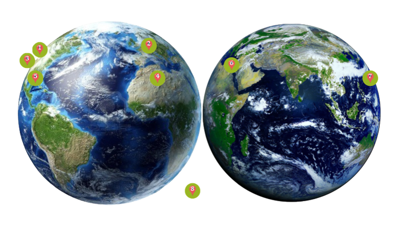
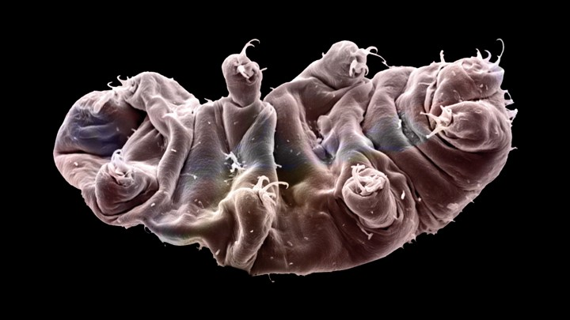

ADULT
TARDIGRADES
ONLY!!
SEE FOOTER
FOR DETAILS!!
Click This...
① Alkaline Hot Spring at Yellowstone National Park
for extreme HIGH temperature and chemical toxins
② Glacier du Mont Mine
for extreme LOW temperature
③ Great Salt Lake
for hypersaline environments
④ The Sahara Desert
for severe dehydration
⑤ The Gulf of Mexico Dead Zone
for zones of anoxia without oxygen
⑥ Chalcolithic copper mine in Timna Valley
for highly radioactive environment
⑦ Mariana Trench deep sea
for extreme hydrostatic pressure
⑧ Beyond Earth
I don't even know what this entails, but like other types of Cryptobiosis, our protein turns us into frozen glass figurines through the process of vitrification. Just image how beautiful we'll look floating in outerspace!!!
Slideshow
Check this out

IF YOU ARE CERTAIN OF THIS DECISION, CLICK TO CONFIRM
Look At Me
ID: XXZRBddU4z4Jy

TARDIGRADES WHO HAS VIEWED THE PAGE...
Contact Info
XXZRBddU4z4Jy@TARDIMAIL.COM